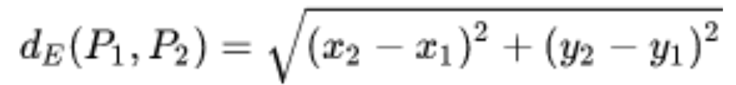
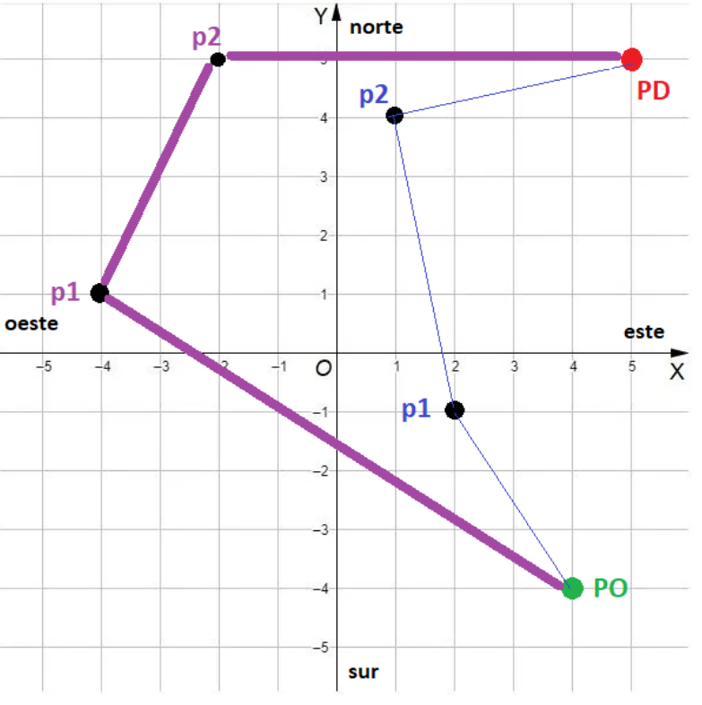

layout: true class: inverse, center, middle --- # Algoritmos y Estructuras de Datos ## Clase de Práctica 4 - Estructuras condicionales ### Comisión A ### Docentes de práctica: #### Tomás Assenza #### Exequiel Benavidez #### Facundo Sanchez #### Nicolas Huber Universidad Tecnológica Nacional - Facultad Regional Santa Fe --- layout: false .center[ ### Ejercicio Practica Parcial _Geoposicionamiento_ ] <hr> <b>Enunciado</b> <div style="font-size:small;"> La triangulación, en geometría, es el uso de la trigonometría para determinar posiciones de puntos, medidas de distancias o áreas de figuras. Para simplificar los cálculos, en este ejercicio utilizaremos la distancia euclídea. Esta es la distancia "ordinaria" dE entre dos puntos P1=(x1,y1) y P2=(x2,y2) la cual se deduce a partir del teorema de Pitágoras como: <br> <p></p> <br> En su forma más simple, los sistemas de geoposicionamiento utilizan coordenadas en el espacio para determinar rutas. Dado un conjunto de puntos definidos como reales, estos sistemas calculan la distancia total a recorrer entre ORIGEN (PO) y DESTINO (PD) usando puntos intermedios. En nuestro caso, las rutas llevan 2 puntos intermedios (p1 y p2) que definen un camino alternativo entre PO y PD. El sistema debe evaluar un lote de N rutas alternativas (siendo N un valor ingresado por el usuario). Para realizar un cálculo, el sistema le pide al usuario el punto PO y el punto PD. Se debe validar mediante una estructura repetitiva que PD sea distinto a PO; caso contrario, solicitar el reingreso de PD. Luego, el usuario indicará la cantidad N de rutas a evaluar e ingresará los puntos intermedios para cada una. Luego, calcula la distancia total a recorrer desde PO a PD por ambas rutas. Finalmente, determina cuál de las dos rutas es la más corta y brinda las instrucciones a seguir en base a los puntos cardinales Norte, Sur, Este, Oeste (en este orden) para el primer tramo (PO,p1) de la ruta ganadora según la cantidad de saltos enteros a realizar. </div> <div style="width: 100%; overflow: auto;"> <div style="float: left; width: 55%; margin-right: 2%;"> <p></p> </div> <div style="float: right; width: 35%; font-size:small; margin-right: 5%; padding: 0.5em; border: 1px solid #000000; border-radius: 5px;"> En este caso, el usuario ha indicado PO y PD, junto con dos rutas alternativas (la linea mas fina y la linea mas gruesa) definidas por 2 pares de números enteros. Al calcular las distancias, se determina que el camino de la línea más fina es el más corto. Luego, las instrucciones al usuario serán: <ul> <li>Ir al NORTE(3)</li> <li>Ir al OESTE(2) </li> </ul> </div> </div> --- .center[ ### Solución ] ```C++ #include <iostream> #include <cmath> using namespace std; int main() { float po_x, po_y, pd_x, pd_y; int n; float distMinima; int rutaGanadora = 0; float mejor_p1x, mejor_p1y; cout << "Ingrese la posicion del punto de partida PO (x y): "; cin >> po_x >> po_y; // 1. Validacion de destino (do-while) do { cout << "Ingrese la posicion del punto de destino PD (x y): "; cin >> pd_x >> pd_y; if (po_x == pd_x && po_y == pd_y) { cout << "ERROR: El destino no puede ser igual al origen. Reintente." << endl; } } while (po_x == pd_x && po_y == pd_y); // 2. Ingreso de cantidad de rutas cout << "Ingrese la cantidad de rutas a evaluar: "; cin >> n; ``` --- .center[ ### Solucion (parte 2) ] ```C++ // 3. Bucle para procesar el lote de rutas for (int i = 1; i <= n; i++) { float p1_x, p1_y, p2_x, p2_y; float distActual; cout << "RUTA " << i << " ---" << endl; cout << "Punto intermedio 1 (x y): "; cin >> p1_x >> p1_y; cout << "Punto intermedio 2 (x y): "; cin >> p2_x >> p2_y; distActual = sqrt(pow(p1_x - po_x, 2) + pow(p1_y - po_y, 2)) + sqrt(pow(p2_x - p1_x, 2) + pow(p2_y - p1_y, 2)) + sqrt(pow(pd_x - p2_x, 2) + pow(pd_y - p2_y, 2)); cout << "Distancia calculada: " << distActual << endl; if (i == 1 || distActual < distMinima) { distMinima = distActual; rutaGanadora = i; mejor_p1x = p1_x; mejor_p1y = p1_y; } } } ``` --- .center[ ### Solucion (parte 3) ] ```C++ // 4. Resultado final e instrucciones if (rutaGanadora != 0) { cout << "LA RUTA MAS CORTA ES LA: " << rutaGanadora << endl; cout << "DISTANCIA TOTAL: " << distMinima << endl; float x = mejor_p1x - po_x; float y = mejor_p1y - po_y; cout << "INSTRUCCIONES: " << endl; if (y > 0) { cout << "- Ir al NORTE (" << y << ")" << endl; } else if (y < 0) { cout << "- Ir al SUR (" << -y << ")" << endl; } if (x > 0) { cout << "- Ir al ESTE (" << x << ")" << endl; } else if (x < 0) { cout << "- Ir al OESTE (" << -x << ")" << endl; } } return 0; } ``` --- .center[ ### Ejercicio Practica Parcial _Amartizando_ ] <hr> **Enunciado** <div style="font-size:medium;"> Estás en el equipo que programa la última sonda enviada a Marte, y se te solicita: Hacer el programa de seguimiento del amartizaje. El mismo consiste en tomar los datos de la sonda durante el descenso hasta que se amartiza, y luego entregar algunos resultados.<br> El programa toma cada 1 segundo una lectura de 3 valores: <ul> <li> Altitud (en metros)</li> <li> Distancia al lugar de amartizaje previsto (en metros)</li> <li> Dirección (1 letra mayúscula N,S,E,O)</li> </ul> La distancia y dirección actualizan las coordenadas (x,y) de la sonda. Los valores iniciales de x e y son (0,0). En cada lectura, se actualiza el (x,y) previo de la siguiente manera: <ul> <li>Si la dirección es norte (N), se suma su distancia al valor de y, mientras que si es sur (S) se resta su distancia al valor y.</li> <li>Si la dirección es este (E), se suma su distancia al valor de x, mientras que si es oeste (O), se resta su distancia al valor de x.</li> </ul> El programa debe leer las ternas de datos de cada medición. El ingreso de datos termina cuando la sonda efectivamente amartizo y la altitud en la terna es 0. Se debe mostrar por pantalla: <ol> <li> Velocidad promedio de descenso de la sonda desde que se inició la toma de datos hasta el aterrizaje (2 decimales de precisión). La misma se calcula como (altura inicial / lecturas por segundo), en el ejemplo 5000/9, lo que da 555.55m/s. </li> <li> Valores finales de las coordenadas x e y que han sido calculadas en base a cada medición. La posición final (coordenadas x,y) se calculan como la sumatoria de x=(4-6+3-3) = -2 y la sumatoria de y=(2-3+6-4+2) = 3. </li> </ol> </div> --- .center[ ### Solución ] ```C++ #include <iostream> #include <iomanip> using namespace std; int main() { float altura_inicial, altura, x=0, y=0, dist; int mediciones = 0; char dir; bool primera = true; do{ cin >> altura >> dist >> dir; mediciones++; if(primera){ primera = false; altura_inicial = altura; } if(dir == 'N') y += dist; else if(dir == 'S') y -= dist; else if(dir == 'E') x += dist; else if(dir == 'O') x -= dist; } while(altura > 0); cout <<fixed<<setprecision(2); cout << "Velocidad promedio: "<< altura_inicial/mediciones << " m/s" << endl; cout << "Posicion final: " << x << ", " << y << endl; } ```